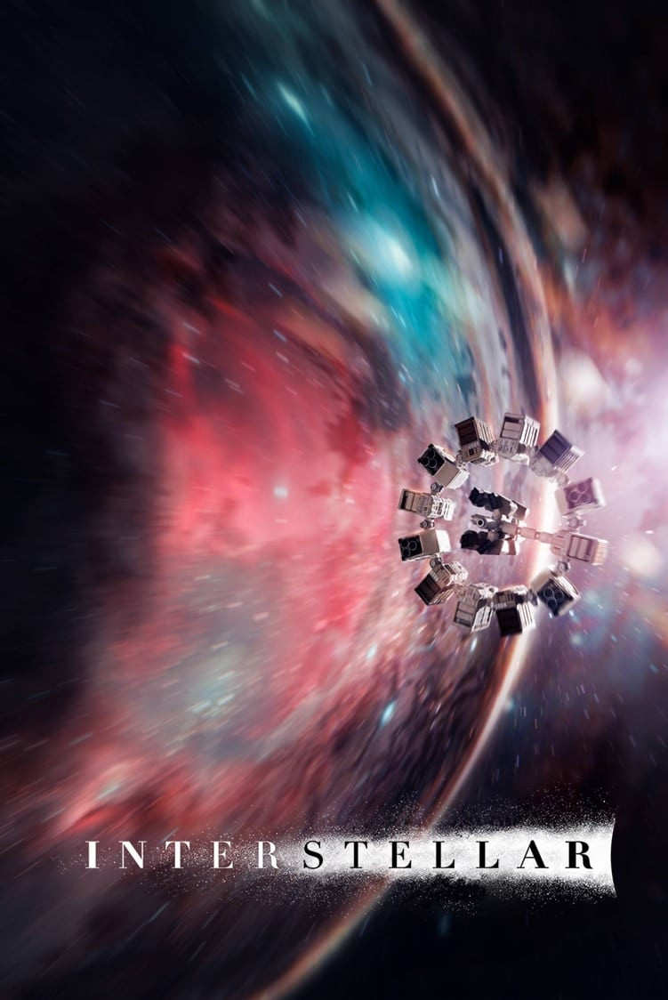
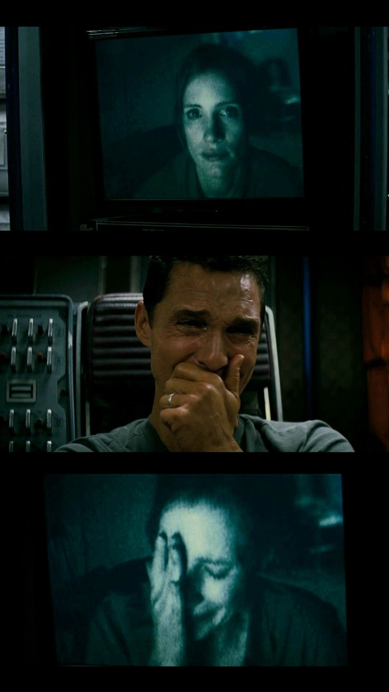
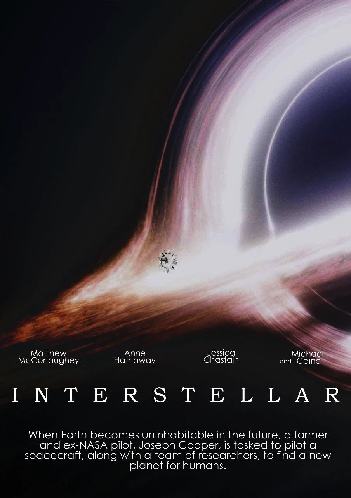

Science Fiction, Adventure, Drama
2014
169 minutes
Christopher Nolan
Interstellar follows former NASA pilot Joseph Cooper as he joins a daring mission through a wormhole in search of a new home for humanity. As the crew ventures across distant worlds, Cooper must confront impossible choices involving time, sacrifice, and the enduring bond between a father and his daughter.